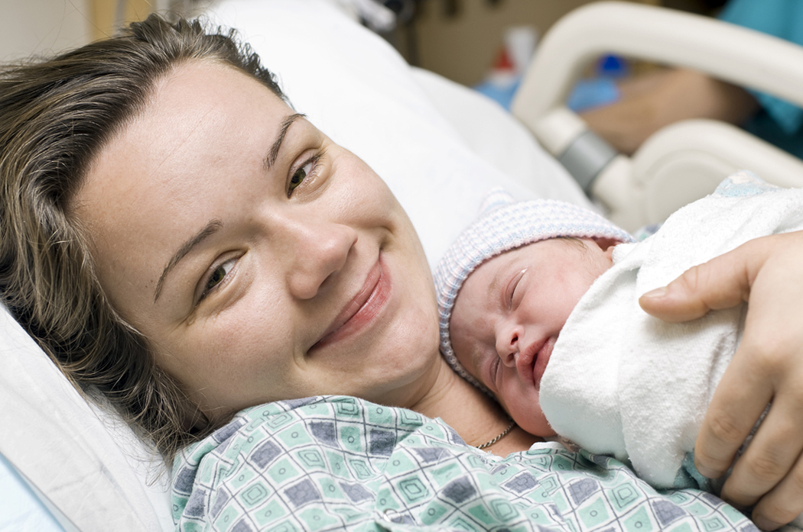
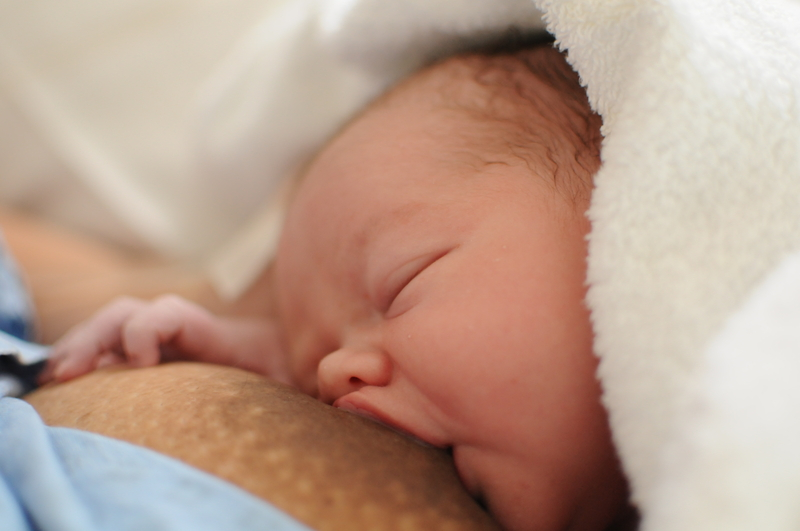
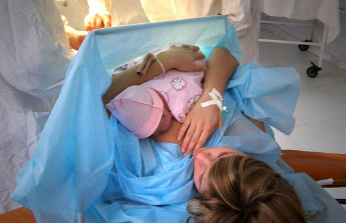

Коли прибуде молоко і від чого це залежить?

Світ влаштований так, що на все є причини. У медицині такого з впевненістю сказати ніхто не може. Тому, коли мама спитає: «А коли повинне прийти молоко?», ми зможемо лише назвати межі від і до. На сьогодні розрізняють три етапи утворення молока:
- Молозивний період – до 4-х діб
- Утворення перехідного молока – 4-13 днів
- Утворення зрілого молока – з 13-го дня
Відчуття прибування молока виникає власне на другому етапі синтезу молока. Які причини сприятимуть відстроченому приходу молока:
- Наявність залишків плаценти в матці. Тому кожна жінка повинна проходити УЗД контроль перед випискою з пологового для попередження ускладнень.
- Цукровий діабет. Жінка повинна контролювати рівень цукру в крові та систематично приймати препарати, адже часто жінки з неконтрольованим цукровим діабетом не можуть утворювати достатню кількість молока.
- Текалютеїнові кисти, що продукують тестостерон, розсмоктуються через 4-6 тижнів після пологів і тоді запускається процес лактації.
Сучасні дослідження говорять, що чим раніше дитина прикладена до грудей і чим частіше вона буде прикладатися протягом перших 4-х діб після народження, тим м’якіше пройде цей етап.

А ось, ЩО вплине на м’якість та успішність налагодження грудного вигодовування в «кризовий» період перехідного молока:
1. Потрібно мати сили в пологах:
Мама має право пити та їсти під час пологів. Зневоднення та голод подовжує час потуг, підвищує біль в переймах, а отже і сприяє застосуванню ліків. А ліки, як ми вже достеменно знаємо, відтерміновують прихід молока та налагодження ГВ.
Е.М. Фатеева, Е.В. Телешева, М.В. Гмошинская. Питьевой режим кормящей матери в первые дни после родов. // Вопросы детской диетологии т.1, No4, с. 13-15
Relationship between Use of Labor Pain Medications and Delayed Onset of Lactation
Jennifer N. Lind, PharmD, MPH,1,2,3 Cria G. Perrine, PhD,2,3 and Ruowei Li, MD, PhD2
2. Дотримання протоколів ведення пологів, без застосування «помічників»
2а) Внутрішньовенні вливання до, підчас та після пологів призводять до набряку грудей, а отже дитині важче захопити груди, прихід молока відбувається пізніше. При народженні у дитини вища вага, більша втрата, а отже і суміш призначать охочіше.
Early Weight Loss Nomograms for Exclusively Breastfed Newborns
Valerie J. Flaherman, Eric W. Schaefer, Michael W. Kuzniewicz, Sherian X. Li, Eileen M. Walsh, Ian M. Paul
2б) Застосування спазмолітиків ( окрім подовження пологів, відсутності ефекту знеболення, токсичного впливу на плід) теж впливає на те, що молоко прийде пізніше та малюк буде слабше смоктати груди.
(Р.Савка Спазмолітики під час вагітності і пологів. Проект “Здоровье матери и ребенка” www.mihp.com.ua)
3. Дотримання теплового ланцюжка:
Є дослідження яке показує, що чим триваліший перший контакт шкіра-до-шкіри після пологів тим вища ймовірність, що дитина буде на виключному грудному вигодовуванні.
Bramson L1, Lee JW, Moore E, Montgomery S, Neish C, Bahjri K, Melcher CL.

4. Якнайшвидше прикластися до грудей. Заважати цьому етапу буде:
- Кесаревий розтин (тому без потреби ми прагнемо до природніх пологів)
- Загальне знечулення під час кесаревого розтину. Дослідження довели вплив препаратів для знеболення ще 30 днів після народження (тому обговорюємо можливість епідуральної чи спінальної анестезії)
- Місцева анестезія заради зменшення болю, без показів. Лише епідуральна анестезія відтерміновує перше прикладання на 2 години. Ефективність смоктання малюка по 12-ти бальній шкалі зменшується на 3 пункти відносно пологів без знеболення. Третина мам схильні припинити грудне вигодовування після епідуральної анестезії, а майже половина переходить на змішане вигодовування в перші 14 днів після народження.
Maternal accounts of their breast-feeding intent and early challenges after caesarean childbirth.
Tully KP1, Ball HL2.
Ransjö-Arvidson AB1, Matthiesen AS, Lilja G, Nissen E, Widström AM, Uvnäs-Moberg K.
The effects of maternal epidural anesthesia on neonatal behavior during the first month.
Sepkoski CM, Lester BM, Ostheimer GW, Brazelton TB.
The effect of labor pain relief medication on neonatal suckling and breastfeeding duration.
Riordan J1, Gross A, Angeron J, Krumwiede B, Melin J.
Labor Epidural Anesthesia, Obstetric Factors and Breastfeeding Cessation. Ann M. Dozier, Cynthia R. Howard, Elizabeth A. Brownell, Richard N. Wissler, J. Christopher Glantz, Sharon R. Ternullo, Kelly N. Thevenet-Morrison, Cynthia K. Childs, and Ruth A. Lawrence
5. Постійне «висіння» дитини на грудях.
Годування по режиму та відсутність спільного перебування разом з обмеженням пиття мами втричі збільшують ймовірність виникнення застоїв молока у мами.
Проте, попри всі вищесказані перешкоди та порушення протоколів лікарями, прибування молока відбудеться у ВСІХ. Природою закладено цей процес так, що кожна мати після народження зможе вигодовувати свою дитину. На даний момент, лише 2 % мам світу не можуть годувати новонародженого своїм грудним молоком. Тому не хвилюйтесь дарма: «Хто обізнаний той озброєний». Якщо у вас є сумніви чи потрібна допомога, консультанти з Львівської групи підтримки грудного вигодовування завжди готові відповісти на ваші запитання.